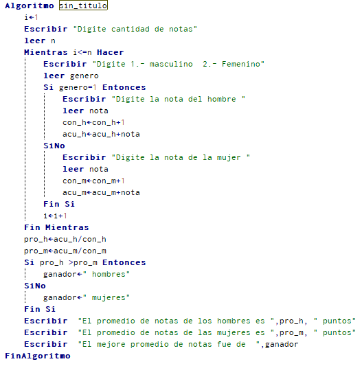
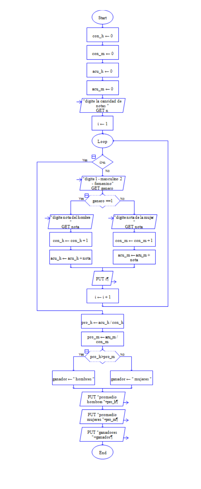

Ejemplo:
Un profesor desea registrar las notas obtenidas por N estudiantes de su salón, discriminando si son hombres o mujeres. Se requiere un programa que capture la nota y el sexo (1 para hombres y 2 para mujeres) y realice un promedio para cada uno de los tipos. Al final debe indicar cuál de los dos (hombres o mujeres) tuvo un mejor desempeño
Pseudocodigo

Dfd
